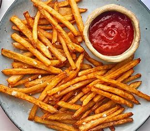

allrecipes
How to make shalom french fries
Today i will show you the best tyoe of french fries
Ingredients
Now i will tell you the Ingredients.
- 3–4 large potatoes
- Oil for frying
- Salt
Now i will show you the steps
- Peel and cut the potatoes
- Soak in cold water (30 minutes or more)
- Dry the potatoes
- Heat oil
- Fry the potatoes for about 4–5 minutes, until soft but not golden.
- Increase oil heat to 190°C (375°F)
- Remove, drain on paper towels, and sprinkle with salt.
Meet pie
Ice creem
Muffins
lemonade
Fench fries